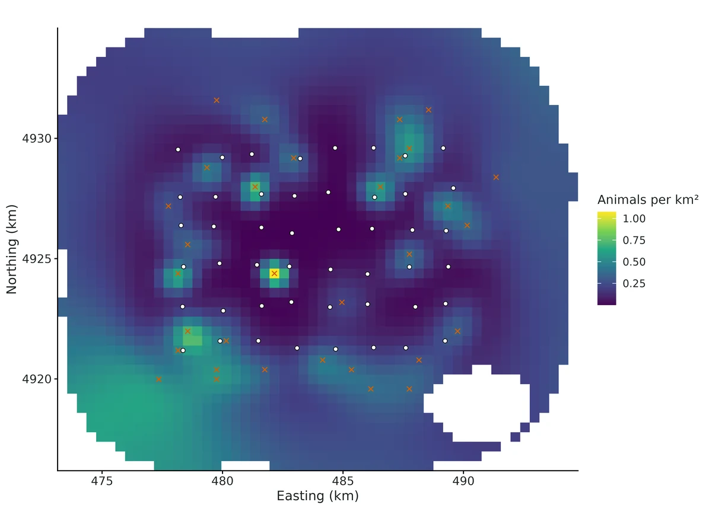
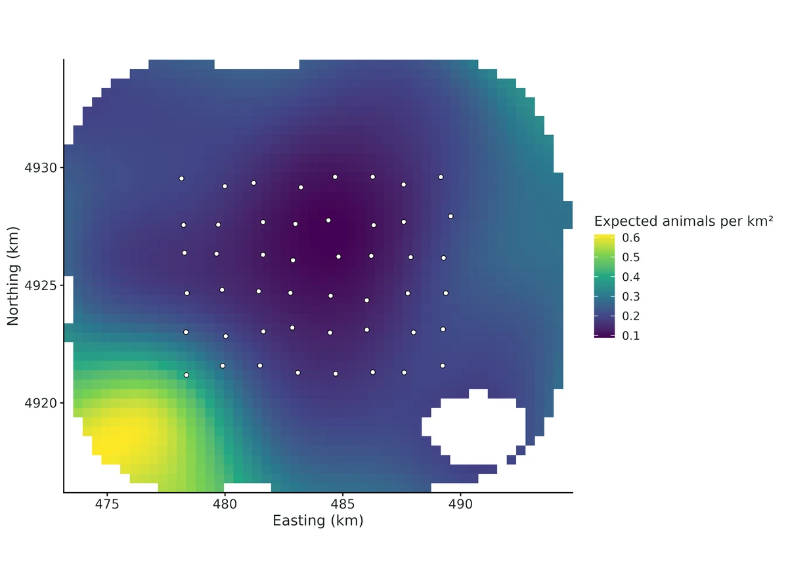
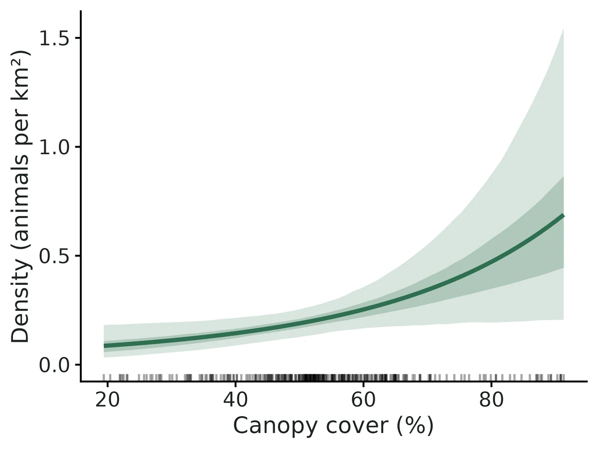
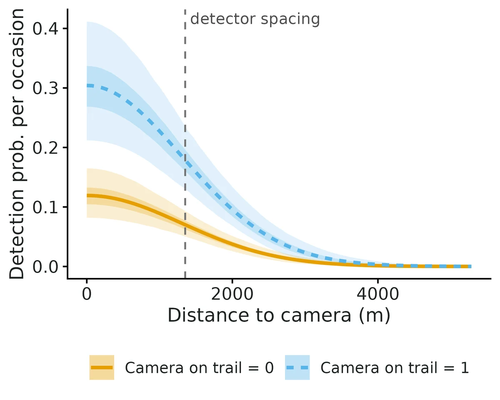

Spatial capture-recapture (closed population density)
How many animals live here, at what density, and is density associated with habitat? Do males range farther than females? Are animals trap-happy at baited sites? SCR uses where each identified individual was detected across an array of detectors. Animals living near many detectors are detected often and at several detectors; animals near the edge, rarely. The model turns that spatial pattern into:
Is this the right analysis?
Use it when
Individually identified animals detected at fixed detectors over repeated occasions within one closed season (camera traps of marked/spotted species, DNA from hair snares, scat stations or rub objects, live traps); question is population density (per km2), abundance, ranging scale, sex ratio or sex differences in ranging, or whether density is associated with habitat covariates. Handles 0/1 detections (binomial or per-occasion Bernoulli) and counts of genetic samples (Poisson), uneven detector effort, habitat masks from a raster, polygon or grid, detector / occasion / sex covariates on detection and a trap-specific behavioural response.
Not for
Unmarked animals (use nmixture / occupancy / distance sampling), partially marked populations (scr-smr), open populations across seasons or years with survival and recruitment (scr-open / jolly-seber), samples found along search tracks rather than at fixed detectors (scr-search), telemetry-only data (movement modules), genotypes with unresolved identity errors (fix them in the lab first; see NGS section).
The data you need
Detector CSV (id, x, y [, detector covariates]); detection or genetic-sample CSV (individual, occasion, detector [, sex, QC status]); optional effort table (detector x occasion), occasion covariate table, individual sex table, habitat grid CSV / GeoTIFF raster / polygon (shapefile, GeoPackage).
What the example's main data file looks like:
| camera_id | utm_e | utm_n | on_trail | weeks_active | habitat_note |
|---|---|---|---|---|---|
| BC01 | 478360 | 4921185 | 0 | 11111111 | off-trail game path |
| BC02 | 479899 | 4921576 | 0 | 11111111 | off-trail game path |
| BC03 | 481487 | 4921585 | 0 | 11111111 | off-trail game path |
| BC04 | 483093 | 4921284 | 0 | 11100000 | off-trail game path |
| BC05 | 484694 | 4921239 | 0 | 11111111 | off-trail game path |
Not sure? Use the finder to compare modules.
The worked example
Bobcat density from camera traps: closed spatial capture-recapture with a canopy-cover density covariate (simulated data)
A biologist set 48 motion-triggered cameras on a grid about 1.6 km apart (placement shifted up to 250 m to fit access). The cameras ran for 8 weeks, 2 June to 27 July 2025. Each week is one sampling occasion. Eighteen cameras were on logging roads or trails, where bobcats travel and are photographed more often; 30 were on off-trail game paths. Some cameras failed part-way (dead batteries, theft) and two were set a week late, so each camera has a record of the weeks it was working.
The question: How many bobcats live in the study area (density per km2 and abundance), and is bobcat density higher where forest canopy cover is higher, allowing for cameras on trails detecting bobcats more often and for cameras that stopped working?
The data are simulated, so the true answer is known and the analysis can be checked against it.
What the researcher typed
I have bobcat camera-trap data in this folder: a camera file with UTM coordinates, whether each camera was on a trail and which weeks it worked; a file of photo-detections of individually identified bobcats by week and camera; and a 400 m habitat grid with canopy cover and a flag for the reservoir. Please estimate bobcat density and how many bobcats live in the area, and tell me whether density is higher where canopy cover is higher. Check that the method works for a design like mine before you trust it, and give me a report and figures I can put in a paper.
Run it yourself
Download the example data below and unzip it.
Open the unzipped folder in Claude Code (see Install).
Paste the prompt above. The agent checks the files, writes a plan, runs planted truth, fits the model and writes the report. You can compare your results with the ones below.
Contains cameras.csv, bobcat_detections.csv, habitat_grid.csv, the settings file (config.yaml), a description of the data and a step-by-step walkthrough.
Study design details
| model | closed SCR, binomial detections, log-linear density in canopy cover, on-trail detection covariate |
|---|---|
| cameras | 48 |
| camera grid | 8 x 6 |
| camera spacing m | 1600 |
| mean nearest camera distance m | 1350 |
| cameras on trail | 18 |
| occasions weeks | 8 |
| camera weeks working | 354 |
| camera weeks total | 384 |
| detections | 114 |
| individuals detected | 33 |
| individuals at more than one camera | 25 |
| spatial recaptures | 53 |
| mask pixels habitat | 2189 |
| mask spacing m | 400 |
| habitat area km2 | 350.2 |
| buffer m | 5000 |
| buffer sigma | 3.8 |
| nonhabitat | reservoir, ~3% of the grid |
Results from the example data

In plain language
- Density was estimated at 0.24 (95% CrI 0.16 to 0.34) animals per km², i.e. 23.7 per 100 km2.
- Over the 350 km² of habitat in the state space (the detector array plus a buffer), that is 82.7 (95% CrI 58.0 to 118) animals, of whom 33 (40%) were detected.
- The spatial scale of detection, sigma, was 1326 (95% CrI 1165 to 1510) m; a home-range area of about 33 (95% CrI 26 to 43) km². Real home ranges are rarely circular, so treat this as an index of ranging scale.
- 'Camera on trail' (1 vs 0) multiplied the odds of detection by 3.2 (95% interval 1.9 to 5.4). Baseline detection was 0.30 (0.21 to 0.41) where Camera on trail = 1 versus 0.12 where it = 0. This is a detection effect (how easily animals are recorded), not a difference in where animals live.
- Each 1 SD (15 units) higher Canopy cover (%) is associated with 51% higher density (rate ratio 1.5, 95% interval 1.1 to 2.1). Posterior probability that the association is positive: 0.99.
- Expected density is 0.13 per km² (0.070 to 0.20) where Canopy cover (%) = 34.9 (10th percentile of the habitat) and 0.37 (0.19 to 0.62) where it = 72.6 (90th percentile).
- This is a correlation between density and habitat across the state space, not proof that the habitat causes higher density.
More figures



Figures are the module's default publication figures, reduced for the web. The report also saves them as PDF and full-resolution PNG.
Planted truth at the example's design
Before trusting the example's results, the module was run on many simulated data sets with the same design and known true values. Each row is one quantity: did the method get it back? (What the thresholds are.)
Every quantity checked passed planted truth at this design.
| This example | 48 cameras (8 x 6 grid, 1,600 m apart), 8 weekly occasions, 33 bobcats detected |
|---|---|
| Design the module was validated at | 49 cameras (7 x 7 grid, 1,500 m = 1.5 sigma apart), 6 occasions, about 42 animals detected |
The example has a similar camera grid and two more occasions than the validated default, but it detected fewer animals (33 against about 42). VALIDATION.md found that once about 33 or fewer animals are detected, the posterior mean of density tends to run high: +17.5% in the independent verifier's run with about 33 detected, and +12.4% for density and +20.9% for baseline detection with about 18 detected. In both runs the 95% intervals still contained the truth 92-96% of the time. A planted-truth run matched to the example (about 32 detected) passed all 7 estimands, with density +5.2% and coverage 0.948.
7 of 7 rows pass.
| Quantity | True value | Average estimate | Bias | Allowed bias | Coverage (needed) | Result |
|---|---|---|---|---|---|---|
| abundance | 96.7 | 98.4 | +1.8% | ±10.0% | 0.95 (0.883) | ✓ PASS |
| baseline_detection | 0.12 | 0.127 | +5.8% | ±10.0% | 0.94 (0.883) | ✓ PASS |
| density_beta_canopy | 0.45 | 0.465 | +3.4% | ±14.1%† | 0.95 (0.883) | ✓ PASS |
| density_per_km2 | 0.25 | 0.261 | +4.2% | ±10.0% | 0.95 (0.883) | ✓ PASS |
| detection_beta_on_trail | 1.1 | 1.06 | -3.7% | ±10.0% | 0.97 (0.883) | ✓ PASS |
| home_range_area_95 | 31.8 | 31.6 | -0.8% | ±10.0% | 0.95 (0.883) | ✓ PASS |
| sigma | 1,300 | 1,291 | -0.7% | ±10.0% | 0.95 (0.883) | ✓ PASS |
Limits that matter
- Small-sample upward bias: posterior means of density/abundance lean high with few detected animals (+12% with ~18 detected, +4-8% with ~42; VALIDATION.md limit 2); with 33 detected, quote the interval and compare with secr.
- Density-covariate false positives: with ~33-42 detected animals and no true effect ~10% of 95% intervals excluded 0 (VALIDATION.md limit 3); the canopy interval's lower end (0.06) is close to 0, so the size of the association is uncertain.
- Buffer must be >= 3-4 sigma (1 sigma inflated density +47%); here 3.8 sigma.
- The camera array sits in below-average canopy; density over the whole state space relies on the canopy model to extrapolate (unmodelled heterogeneity biased density +64% in VALIDATION.md 3b).
- Model scope: half-normal detection, Euclidean distance, closed population, correct photo IDs, no sex-specific ranging (sex not recorded).
- Density covariate effects are associations, not causal effects.
All known limits from the module's validation record
Known limits
- Wide spacing / sparse data (section 2a). Traps 3 sigma apart with ~32 detected animals (median 3 spatial recaptures) and 4 occasions: density, abundance and p0 biased +18-20% and 14% of fits do not converge (secr behaves the same way). Keep spacing <= 2 sigma (Sun et al. 2014). With few spatial recaptures (the report warns below 10) or fewer than 25 detected animals, treat density as imprecise and likely too high; the report prints the spacing/sigma ratio and the number of spatial recaptures.
- Small-sample upward bias. With ~18 detected animals (section 2b, spacing 1.5 sigma) density is biased +12% and p0 +21%: gate FAIL. Even at the default design (~42 detected) posterior means of density/abundance/p0 are +4-8% high (inside the gate; secr MLE +2%). Posterior means of right-skewed quantities. Report the interval, not just the point estimate.
- Density-covariate false positives. With effect = 0, 10% of 95% intervals excluded 0 (nominal 5%; MC SE 2.2%) at ~42 detected animals (the independent verifier's null run is reported in the Independent verification section). An interval that only just excludes 0 is weak evidence.
- Strong density gradients need longer chains. Canopy effect 1 SD with the array in good habitat: only 77/100 replicates reached R-hat < 1.05 at 3 x 12,000 iterations; 100/100 at 3 x 30,000. Real-data defaults are 3 x 20,000 and the report demands R-hat < 1.01 and ESS >= 400.
- State space must be large enough. A 1-sigma buffer inflated density by +47% (section 3a). Use buffer >= 3-4 sigma (report warns below 3).
- Unmodelled density heterogeneity biases density over the state space (+64% in section 3b) when the traps sit in atypical habitat. Include the habitat covariates that drive density, or restrict inference to the trapped area.
- Model scope (updated in round 2). Half-normal detection only (no hazard-rate or exponential shapes); Euclidean distance (no landscape resistance); no telemetry integration, no open population (scr-open), no search-encounter / polygon detectors (scr-search), no partial identification (scr-smr); multi-catch traps are treated as proximity detectors. Behavioural response only in the trap-specific form (secr "bk"), not the global "b" or transient "B" forms. Identity (genotyping) errors are not modelled (round 2, section 14).
- Engines validated at different depth. Recovery at nsim >= 100 was run for Nimble marginal (all designs), secr (default, hard, Poisson NGS designs) and, in round 2, NumPyro (binomial camera design with a lake mask and two density covariates; Poisson NGS design). Nimble latent was validated only by single-data-set cross-checks (section 6). NumPyro has only the marginal model and does not support occasion covariates, sex, sigma covariates or behaviour (use nimble or secr for those).
- Core gate caveat (resolved). The builder found that core
recovery_gate()could not fail on convergence; the orchestrator fixed core on 2026-10-19 (n_randenominator, docs/CORE_CHANGES.md). Re-gating every saved scr*_reps.csvwith the fixed core (dev/scr/verify/regate_scr.R) reproduces the convergence verdicts stated by hand in this file (hard 83/100, hard_long 86/100, hetero_correct 77/100: FAIL; all others PASS).
Known limits added in round 2
- Bernoulli + trap-specific response: p0 and the response trade off. Posterior-mean p0 +16% (gate FAIL) and response -10% at truth 0.8; at truth 0 the response is centred at -0.38. Density, abundance, sigma and covariate effects are fine. Prefer counts (Poisson) when one animal can leave several samples, report the response with its interval, and compare with the model without the response. secr (MLE) is unbiased for both on the same design (+2%, -2%), so use
compare_engines: [secr]and report its p0 and response. With 10 occasions the posterior-mean p0 bias falls to +9% (passes), but only 86/100 fast-settings fits converged (section 10f2). Under a true response of 0 both Nimble (-0.38) and secr (-0.29) are shifted negative; false-positive rates stay <= 0.08. - Small NGS samples (~22 detected animals): density +17%, abundance +16%, lambda0 +13% (section 10g).
- Sex with mostly unknown sex (60% unknown): unbiased within MC error but sex differences become imprecise; sex must be missing at random with respect to sex.
- Identity errors are not modelled (section 14).
- Run time. Per-occasion models (Bernoulli, occasion covariates, behaviour) evaluate J x K detector-occasions per pixel: ~20-40 min per fit on one core at the default design (secr: ~5 min). Sex-specific models need 3 x 24,000 iterations to converge reliably.
How this module was validated
- 100 simulated datasets per design, fitted with Nimble (3 chains x 12,000 iterations, 4,000 burn-in). To pass, bias had to be within 10% (or 3 Monte Carlo SE), coverage (how often the 95% interval contained the truth) at least about 0.885, and at least 90% of fits had to converge.
- Default design: all 7 estimands passed (density +4.6%, coverage 0.95; 100/100 fits converged). The same design fitted with secr (maximum likelihood, 200 datasets) also passed.
- Harder designs failed and are recorded as known limits. With traps 3 sigma apart and about 32 detected, density was +18.4% and only 86/100 fits converged. A sparse population with about 18 detected gave density +12.4% and baseline detection +20.9%.
- Negative controls failed, as they should. A state space that was too small inflated density by 47% (coverage 0.34). Ignoring habitat-driven density gave +64% (coverage 0.05).
- False-positive rate (an interval excluding 0 when there is no true effect): 0.10 for the density covariate at the default design (nominal 0.05) and 0.03 for the detection covariate. Later designs gave 0.02-0.09.
- Cross-checks: Nimble marginal, Nimble latent, NumPyro and secr agreed within Monte Carlo error on the same data, and the module's likelihood matched secr's to within 3e-5.
- Power to detect a 0.5-per-SD habitat effect was 0.82 with 6 occasions and 0.91 with 10. A separate verifier agent used its own simulator (about 43 detected; all 7 estimands passed) and rated the module verified with limits.
Every run uses the acceptance gate described on the validation page. The full record follows, section by section, exactly as kept in the module's VALIDATION.md.
Settings and pass/fail rule used for every run
All runs: bin/Rscript core/run.R recover scr --config dev/scr/<cfg>.yaml --nsim N --cores 16 on njobvu (SLURM, 16 cores), module fast_settings (Nimble marginal, RW_block, 3 chains x 12,000 iterations, 4,000 burn-in) unless stated. Raw results: results/scr/recover_<label>/ (summary CSV, per-replicate CSV, HTML report). Gate (core/R/recovery.R::recovery_gate, thresholds not changed): |bias| <= max(10% of truth, 3 MC SE); 95% interval coverage >= 0.95 - 3 MC SE (floor 0.80); R-hat < 1.05 in >= 90% of replicates. "conv" below = share of ALL replicates with max R-hat < 1.05 (the core gate uses the same denominator since 2026-10-19).
Default design (module defaults): 7 x 7 proximity detectors (cameras) at 1,500 m (= 1.5 sigma), 6 occasions, 10% of traps fail part-way, half of the traps on trails, state space = traps + 4,000 m buffer, 500 m mask pixels; density 0.30 / km2 (~87 animals, mean 42 detected, 28 spatial recaptures), p0 = 0.15 off-trail, sigma = 1,000 m, on-trail logit effect 1.0, canopy log-density effect 0.5 per SD.
Timing (selftest, 4 reps on 4 cores): ~240 s per replicate including the ~60-100 s Nimble compile; with the compiled-model cache a 100-replicate run takes 15-20 min on 16 cores.
1. Recovery at the default design (nsim = 100, Nimble marginal) -- PASS
| estimand | truth | mean est | rel. bias | bias MC SE | RMSE | coverage | power | conv |
|---|---|---|---|---|---|---|---|---|
| density_per_km2 | 0.300 | 0.314 | +4.6% | 0.005 | 0.053 | 0.95 | 1.00 | |
| abundance | 86.7 | 90.6 | +4.6% | 1.18 | 12.4 | 0.97 | 1.00 | |
| baseline_detection (p0) | 0.150 | 0.161 | +7.6% | 0.0034 | 0.036 | 0.96 | 1.00 | |
| sigma (m) | 1000 | 998 | -0.2% | 6.9 | 68 | 0.94 | 1.00 | |
| home_range_area_95 (km2) | 18.8 | 18.9 | +0.4% | 0.26 | 2.6 | 0.94 | 1.00 | |
| density_beta_canopy | 0.50 | 0.53 | +6.5% | 0.018 | 0.18 | 0.99 | 0.82 | 1.00 |
| detection_beta_on_trail | 1.00 | 0.97 | -3.3% | 0.028 | 0.28 | 0.92 | 0.92 | 1.00 |
Gate: all 7 estimands PASS (coverage bound 0.885), 100/100 replicates R-hat < 1.05, 0 failures. The +4-8% upward bias in density/abundance/p0 is the usual small-sample SCR bias with ~42 detected animals (posterior mean of a right-skewed posterior); it is inside tolerance and secr (MLE) shows the same sign (+2%).
Homogeneous-density variant (scr0.yaml: no density or detection covariate, nsim = 100): density +4.7%, coverage 0.90; abundance +3.8%, 0.92; p0 +2.5%, 0.95; sigma +1.8%, 0.97 -- all PASS, 100/100 converged.
Same design with secr as the engine (default_secr.yaml, nsim = 200; 2 replicates where secr.fit did not converge are excluded): density +2.0% (coverage 0.93), abundance +1.5% (0.94), p0 +3.1% (0.96), sigma -0.3% (0.95), canopy +3.4% (0.98), on-trail +0.4% (0.94) -- all PASS.
2. Harder designs
(a) Wide trap spacing + sparse population + short survey -- FAIL (documented limit). hard_long.yaml: traps 3,000 m apart (= 3 sigma, beyond the <= 2 sigma guidance of Sun et al. 2014), 4 occasions, density 0.15 / km2 (~100 animals in the state space, ~32 detected, median 3 spatial recaptures). Nimble marginal, 3 x 25,000 iterations (5,000 burn-in), nsim = 100.
| estimand | truth | mean est | rel. bias | bias MC SE | coverage | power | gate |
|---|---|---|---|---|---|---|---|
| density_per_km2 | 0.150 | 0.178 | +18.4% | 0.006 | 0.97 | FAIL (bias) | |
| abundance | 100.1 | 119.6 | +19.6% | 3.9 | 0.95 | FAIL (bias) | |
| baseline_detection | 0.150 | 0.177 | +18.2% | 0.007 | 0.99 | FAIL (bias) | |
| sigma (m) | 1000 | 1038 | +3.8% | 18 | 0.95 | PASS | |
| home_range_area_95 | 18.8 | 21.3 | +13.4% | 0.77 | 0.95 | FAIL (bias) | |
| density_beta_canopy | 0.50 | 0.53 | +6.3% | 0.027 | 0.93 | 0.66 | PASS |
| detection_beta_on_trail | 1.00 | 0.92 | -8.1% | 0.056 | 0.94 | 0.43 | PASS |
Convergence: only 86/100 replicates reached R-hat < 1.05 with abundance clear of the augmentation limit (in the other 14, R-hat up to 2.0, or N pressing against M): FAIL on the >= 90% rule. The table uses the 86 converged replicates; with all 100 included, the mean density bias is +42% (median +18%), because the non-converged fits are data sets with almost no spatial recaptures, where density is barely identified. The shorter fast-settings run (hard.yaml, 3 x 12,000) gave the same picture (83/100 converged; density +17%, p0 +20%).
The independent maximum-likelihood fit (secr, same design, nsim = 200) has the same problem: before the sigma-start fix, 15/200 fits failed and density was +13.7% among the rest; after it (hardfix_secr.yaml), all fit but the mean density bias is +38% (median +6%; 20/198 estimates are > 2x truth). So this is a property of the design, not of the Nimble code: with traps 3 sigma apart, ~32 detected animals (median 3 spatial recaptures) and 4 occasions, SCR cannot pin down density reliably. Intervals still cover (0.95-0.99), but point estimates are biased upward and some data sets give unusable fits. The report flags spacing > 2 sigma, fewer than 10 spatial recaptures and fewer than 25 detected individuals (thresholds raised by the independent verifier from 5 and 15, because both failing designs had median spatial recaptures of 3 and 10 respectively).
(b) Sparse population and short survey at GOOD spacing -- FAIL (documented limit). lowdens.yaml: default 7 x 7 array at 1.5 sigma, but density 0.15 / km2 (~42 animals in the state space, mean 18 detected, range 9-31; median 10 spatial recaptures) and 4 occasions. Nimble marginal, fast settings, nsim = 100, 100/100 converged.
| estimand | truth | mean est | rel. bias | bias MC SE | coverage | power | gate |
|---|---|---|---|---|---|---|---|
| density_per_km2 | 0.150 | 0.169 | +12.4% | 0.0048 | 0.94 | FAIL (bias) | |
| abundance | 42.4 | 48.3 | +14.5% | 1.26 | 0.96 | FAIL (bias) | |
| baseline_detection | 0.150 | 0.181 | +20.9% | 0.0075 | 0.93 | FAIL (bias) | |
| sigma (m) | 1000 | 1003 | +0.3% | 14 | 0.92 | PASS | |
| home_range_area_95 | 18.8 | 19.7 | +4.7% | 0.64 | 0.92 | PASS | |
| density_beta_canopy | 0.50 | 0.49 | -2.1% | 0.037 | 0.88 (bound 0.885) | 0.35 | FAIL (coverage) |
| detection_beta_on_trail | 1.00 | 0.88 | -11.7% | 0.043 | 0.96 | 0.42 | PASS (within 3 MC SE) |
Good spacing alone does not rescue a small sample: with ~18 detected animals density and p0 are biased upward by 12-21% (posterior means of right-skewed posteriors with a weakly informed p0-N trade-off), although 95% intervals still cover. Power for a 0.5/SD habitat effect is only 0.35. Practical threshold: the default design (~42 detected) passes, this one (~18) fails; the report warns below 25 detected individuals.
3. Negative controls (the gate CAN fail)
(a) State space too small (neg_buffer.yaml: same data-generating design, but the model's state space is trimmed to 1,000 m = 1 sigma beyond the traps). Animals living outside the trimmed area are still detected and are squeezed into it:
| estimand | truth | mean est | rel. bias | coverage | gate |
|---|---|---|---|---|---|
| density_per_km2 | 0.300 | 0.441 | +47% | 0.34 | FAIL |
| abundance (truth = animals in the full 4 km-buffer area) | 86.4 | 45.8 | -47% | 0.00 | FAIL |
| p0, sigma, both betas | -8% to +1% | 0.89-0.94 | PASS |
The report warns whenever buffer < 3 sigma. (Abundance is "low" only because it refers to the smaller area; the density inflation is the real error.)
(b) Ignoring spatial heterogeneity in density (neg_hetero.yaml): the trap array sits in better-than-average habitat (covariate_trend = 2, canopy effect 1.0 per SD) but density is fitted as homogeneous (density_covariates: []). Density over the state space is overestimated by +64% (0.49 vs 0.30, coverage 0.05) and abundance by +63% (coverage 0.00): gate FAIL for both, while p0 and sigma still pass. The same replicates fitted with the correct model (section 4) pass.
4. Correct model on the heterogeneous data
Same data-generating design as 3(b) (covariate_trend = 2, canopy effect 1.0 per SD), fitted with density ~ canopy (hetero_long.yaml, nsim = 100, 3 x 30,000 iterations, 10,000 burn-in):
| estimand | truth | mean est | rel. bias | coverage | gate |
|---|---|---|---|---|---|
| density_per_km2 | 0.300 | 0.306 | +2.0% | 0.91 | PASS |
| abundance | 86.7 | 88.0 | +1.5% | 0.96 | PASS |
| p0 | 0.150 | 0.155 | +3.2% | 0.96 | PASS |
| sigma (m) | 1000 | 999 | -0.1% | 0.96 | PASS |
| density_beta_canopy | 1.00 | 0.995 | -0.5% | 0.94 (power 1.00) | PASS |
| detection_beta_on_trail | 1.00 | 1.009 | +0.9% | 0.96 (power 1.00) | PASS |
100/100 replicates R-hat < 1.05 (max 1.006). With the shorter recovery chains (3 x 12,000, hetero_correct.yaml) the estimates were equally good (among the 77 converged replicates: density +1.7%, coverage 0.95; canopy -2.4%, 0.94) but only 77/100 replicates reached R-hat < 1.05, i.e. that run FAILS the convergence part of the gate (the core gate reported PASS because of the denominator issue noted at the end). A strong density gradient (beta = 1 per SD) correlates psi and beta and slows the block random walk; the module's real-data defaults (3 x 20,000) plus the R-hat < 1.01 / ESS >= 400 check in every report, with the advice to run longer, are what protect a real analysis.
5. False-positive rate
| effect | truth | mean est | coverage | share of 95% intervals excluding 0 |
|---|---|---|---|---|
| density_beta_canopy | 0 | 0.017 | 0.90 | 0.10 |
| detection_beta_on_trail | 0 | -0.042 | 0.97 | 0.03 |
All estimands pass the gate (coverage bound 0.885). The detection effect has a nominal false-positive rate. The density-covariate false-positive rate is 0.10 (MC SE 0.022 at the nominal 0.05, so about 2 SE high): with ~42 detected animals the posterior for a density covariate is slightly too narrow (mean posterior SD 0.209 vs empirical SD 0.232 of the estimates). Treat a canopy-type association whose 95% interval only just excludes 0 as weak evidence (see Known limits).
6. Cross-check of all engines on one dataset
Default design, seed 7 (true D = 0.30, N = 85; dev/scr/crosscheck.R, results results/scr/crosscheck/). Bayesian engines at full default settings (Nimble marginal 3 x 20,000 iterations; Nimble latent 3 x 30,000 thin 5; NumPyro NUTS 3 x (1,000 warm-up + 2,000), CPU, float64).
| estimand | Nimble marginal | Nimble latent | NumPyro | secr (MLE) |
|---|---|---|---|---|
| density_per_km2 | 0.312 (0.206-0.446) | 0.312 (0.206-0.442) | 0.310 (0.207-0.435) | 0.303 (0.203-0.451) |
| abundance | 90.1 (63-127) | 89.7 (64-124) | 89.5 (63-124) | 87.5 (64.6-126.4) |
| p0 | 0.162 | 0.161 | 0.162 | 0.154 |
| sigma (m) | 1006 | 999 | 1003 | 997 |
| density_beta_canopy | 0.651 | 0.644 | 0.642 | 0.625 |
| detection_beta_on_trail | 0.458 | 0.475 | 0.462 | 0.502 |
| run time (s) | 192 | 454 | 279 | 20 |
Agreement relative to Nimble marginal: Nimble latent and NumPyro posterior means differ by at most 2.1 and 1.5 combined Monte Carlo SEs respectively (|diff| / posterior SD <= 0.07); posterior SDs agree within 8%. secr MLEs differ from the Nimble posterior means by <= 0.22 posterior SD (expected: MLE vs posterior mean of a skewed posterior), SEs within 10%. The three Bayesian implementations (two independent codings of the likelihood plus a latent-variable formulation) and the independent maximum-likelihood package agree within Monte Carlo error.
7. Power over the number of occasions (nsim = 50 per level)
bin/Rscript core/run.R power scr --vary n_occasions=2,4,6,10 --nsim 50 (results results/scr/power_occasions/). Default design otherwise.
| occasions | density rel. bias | density coverage | density 95% CI width | power: canopy effect (0.5/SD) | power: on-trail effect (1.0) |
|---|---|---|---|---|---|
| 2 | +8% | 0.94 | 0.33 | 0.54 | 0.48 |
| 4 | +10% | 0.88 | 0.22 | 0.62 | 0.84 |
| 6 | +8% | 0.86 | 0.19 | 0.82 | 0.92 |
| 10 | +4% | 0.96 | 0.17 | 0.91 | 1.00 |
Doubling the survey effort from 6 to 10 occasions buys little precision for density but raises power to detect a habitat effect of 0.5 log-units per SD from 0.82 to 0.91. With 2 occasions p0 is biased +38% and estimates are imprecise. (nsim = 50 per level: coverage MC SE ~0.03.)
Independent verification (2026-10-19, second agent)
Scripts: dev/scr/verify/ (own simulator sim_indep.R, driver run_verify.R, direct secr fits secr_direct.R, engine cross-check xcheck_indep.R, messy-data test messy_test.R). Results: results/scr/verify/. Logs: logs/scr_verify_*.log.
Literature / code check. Half-normal p = p0 exp(-d^2/2 sigma^2) matches secr's HN (?detectfn, g0 = detection at d = 0). Marginal likelihood (dSCRmarg, NumPyro): detected i contribute psi sum_g pi_g prod_j Bin(y_ij; K_j, p_gj), the M - n augmented rows (psi sum_g pi_g prod_j (1-p_gj)^K_j + 1 - psi): the Borchers & Efford (2008) mask likelihood under data augmentation (Royle et al. 2014 ch. 5/11; binomial coefficients and C(M,n) are constants). Per-trap usage enters as K_j (correct for Bernoulli occasions with time-constant covariates). Density pi_g = softmax(X_g beta) (equal pixel areas); latent dHabPP density lpi_g - 2 log(pix) is the correct per-area intensity. Density = psi M / area (expected density; psi ~ U(0,1) gives the discrete-uniform prior on N), N = n + Bin(M - n, P(z=1 | undetected)), 95% home range pi (2.448 sigma)^2. scr_simulate() shares no code with the fit (no call into prepare/engines); its truth definitions (beta per SD over the mask, p0 at the 0 reference level of a 0/1 covariate) match the fit's standardisation. No discrepancies found.
Independent planted truth (run_verify.R main, nsim = 100, njobvu, module fast settings). Own simulator: continuous inhomogeneous Poisson process by thinning (not pixel sampling), analytic elevation surface in metres (ridge + gradient), a non-habitat lake (habitat flag 0), 48 jittered traps at 1,200 m (1.7 sigma) in UTM-like coordinates, continuous trail index (0-10) as detection covariate, 8% random trap-occasion failures; D = 0.5/km2, sigma = 700 m, p0 = 0.15 at mean trail index, elevation effect 0.5 per 100 m (0.45 per SD), trail 0.18 per unit. Data written to CSV and read back through read_data(); check_data() clean for all 100. Mean 43 detected (27-62).
| estimand | truth | mean est | rel. bias | coverage | gate |
|---|---|---|---|---|---|
| density_per_km2 | 0.50 | 0.545 | +9.0% | 0.92 | PASS |
| abundance | 99.9 | 108.7 | +8.6% | 0.97 | PASS |
| baseline_detection | 0.150 | 0.155 | +3.0% | 0.95 | PASS |
| sigma (m) | 700 | 702 | +0.3% | 0.95 | PASS |
| home_range_area_95 | 9.22 | 9.42 | +2.2% | 0.95 | PASS |
| density_beta_elev | 0.446 | 0.483 | +8.1% | 0.94 | PASS |
| detection_beta_trail_index | 0.515 | 0.522 | +1.5% | 0.94 | PASS |
99/100 replicates R-hat < 1.05, 0 errors: PASS. Density bias (+9%) is close to the 10% tolerance; see the posterior-mean note below.
Builder's numbers reproduced. core/run.R recover scr --config dev/scr/default.yaml --nsim 100 rerun (logs/scr_verify_rerun_default.log): identical to section 1 (all PASS, 100/100 converged).
Engine cross-check on an independent data set (xcheck_indep.R, n = 38, N = 90): density posterior mean / MLE Nimble marginal 0.489, Nimble latent 0.500, NumPyro 0.497, secr 0.471 (truth 0.5); sigma 731 / 730 / 730 / 729 m; elevation beta 0.59 / 0.57 / 0.56 / 0.58; posterior SDs within 10%. Agreement within Monte Carlo error.
Negative control (run_verify.R negctrl: elevation effect 1.0 per 100 m, model fitted with homogeneous density): density +49% (coverage 0.32), abundance +48% (coverage 0.20): FAIL, as it should; p0, sigma, trail effect PASS. Direct secr on the same data: density +46%, coverage 0.35.
Null / false-positive control (run_verify.R null: both effects 0; mean 33 detected, range 17-48):
| Nimble (module) | secr (direct, my own call) | |
|---|---|---|
| density_beta_elev: 95% intervals excluding 0 | 0.10 | 0.10 |
| detection_beta_trail_index: 95% intervals excluding 0 | 0.12 | 0.08 |
| density: mean rel. bias / median est/truth / coverage | +17.5% / 1.115 / 0.94 | +6.9% / 1.017 / 0.94 |
The gate FAILS here for density and abundance (bias) and, marginally, the detection effect (coverage 0.88 vs bound 0.885). Diagnosis:
- Density-covariate false positives (~0.10) are a small-sample property of the data, not of the module: independent maximum likelihood gives the same 0.10 on the same data sets (builder's null: 0.10 too). Pooled over the builder's and this null, 20/200 density-covariate intervals excluded 0.
- Upward density bias is the posterior MEAN of a right-skewed posterior: per data set, Nimble posterior mean / secr MLE = 1.048 (main, posterior CV 0.19), 1.097 (null, CV 0.28), 1.018 (negctrl, CV 0.15), i.e. about 1 + CV^2. The likelihood is right (engines agree; secr is close to unbiased in the median); with ~33 detected animals the mean exceeds the 10% tolerance. This is a documented limit, not a coding error.
Usability. fit on the example config: estimates close to the simulated truth (density 0.24 vs 0.25, N 84 vs 82, sigma 1325 vs 1300 m, p0 0.12 vs 0.12, on-trail 1.18 vs 1.10, canopy 0.43 vs 0.45 per SD). Every number in the interpretation text was recomputed by hand (odds ratio 3.2 [2.0-5.5], on-trail p0 0.30, +53% density per SD, 95% radius 3243 m, 39% detected); language is associational for density covariates and keeps detection effects separate from ecology. Messy data (14 variants: NA coordinate, misspelled / lower-case trap ID, wrong column name, missing animal ID, bad or NA occasion, NA detection covariate, short usage string, duplicated trap ID, detection at a switched-off camera, units "ft", comma in a number, missing covariate column) all produce specific messages naming the file, row or trap.
Changes made by the verifier (originals in dev/scr/verify/bak/ and bak2/):
- report: new design note when the density posterior CV > 0.25 (posterior mean leans high by ~CV^2; quote the interval and the median or secr); validation sentence corrected (independent design ~43 detected; failure when ~18-33 detected; density-covariate false-positive rate ~0.10); warnings at < 10 spatial recaptures and < 25 detected (raised from 5/15); "an adaptive" grammar; number formatting without trailing dots.
- figures: coefficients plot was collapsed to zero width by long raw parameter names and a side legend: now labelled ("Density: Canopy cover (%)") with the legend below; detection_function axis labels were clipped by the side legend: legend moved to the top; gof panels now use the ecotools theme and shorter labels; engine_comparison has readable facet labels and a caption listing only the engines actually run (it listed all four); density maps in km when metre coordinates span > 5 km.
- io: column-not-found errors name the config key to set (
individual_col:etc.); clearer messages for missing coordinates, IDs and occasions (with row numbers); no spurious coercion warning. - module.R: engine label trimmed ("numpyro " -> "numpyro").
- README: posterior-mean lean and density-covariate false-positive rate added to the limits.
Verdict: VERIFIED_WITH_LIMITS. Passes at the default design and at an independent design (~43 detected), negative control fails as it should, engines agree. Limits: posterior-mean density/abundance biased > 10% once the density posterior CV exceeds ~0.25 (~33 or fewer detected at this kind of design), and density-covariate 95% intervals exclude 0 about 10% of the time under no effect (shared with secr) at these sample sizes.
Resumed check after session restart (2026-10-19, same verify step). No SLURM jobs were left running. Re-read results/scr/verify/{main,negctrl,null}/summary.csv and logs/scr_verify_secrdirect.log: they match the tables above. Re-derived dSCRmarg by hand (detected rows add y_ij logit p_gj to sum_j K_j log(1-p_gj); undetected rows psi sum_g pi_g prod_j (1-p_gj)^K_j + 1 - psi): correct. The final example fit (run after the last report.R edit) was re-checked. The required SCR figures (docs/FIGURES.md) are present: density_surface, density_canopy_cover_pct, detection_function, abundance_posterior, captures_per_individual and engine_comparison. In the PNGs, p0 is 0.12 off-trail and 0.30 on-trail, matching fit$estimates, and the units are correct. The report text was recomputed: odds ratio 3.2 (2.0-5.5), +53% per SD (1.1-2.2), spacing 1.0 sigma. No further changes were needed. The verdict stays VERIFIED_WITH_LIMITS.
Round 2 (2026-10-20): observation models, habitat masks, covariates, sex, behaviour, NGS
New options: obs_model binomial / Bernoulli (per occasion, partial effort as p = 1 - (1 - p)^u) / Poisson (counts of samples, hazard lambda0, mean u lambda); habitat masks from a grid CSV with a habitat flag, a GeoTIFF (covariate and habitat layers) or a polygon (shapefile / GeoPackage); several density covariates; detector-, occasion- and individual-level (sex) covariates on p0 / lambda0; detector covariates and sex on sigma; sex ratio with unknown sex summed out; trap-specific behavioural response; effort / operation matrices; sample-QC filtering for NGS. Configs: dev/scr/round2/cfg/ and dev/scr/round3/cfg/; results results/scr/r2_*, results/scr/r3_*; gate tables printed with dev/scr/round3/gates.R. All recoveries ran on 16 cores (chinook or njobvu) with fast_settings (3 chains x 12,000, 4,000 burn-in) unless a longer run is stated. The gate and its thresholds are unchanged.
8. Likelihood checks (exact, no simulation error)
- Compiled = plain-R likelihood.
dev/scr/round2/test_lik.R: the compiled Nimble distributiondSCRgenand the independent plain-R mirrorscr_loglik()agree to <= 2.3e-13 (3 random parameter draws each) for six variants: default binomial; Bernoulli + rain + trap response + partial effort; Poisson + effort + lake + two density covariates + trap response; sex-specific p0 and sigma + lure on sigma; Poisson + sex + occasion covariate; aggregated Poisson with effort (logs/scr_r2_testlik2.log). - Module likelihood = secr likelihood.
dev/scr/round2/mle_check.Rmaximises the module's own likelihood (M = 20,000, i.e. Poisson N) from a perturbed start and compares with secr's MLE on the same data. Bernoulli (rain, bk, partial effort) and sex (hcov mixture, lure on sigma): every coefficient agrees to < 3e-5 and the maximised log-likelihoods are equal. Poisson with partial effort initially differed (lambda0 0.294 vs 0.310, on-trail 0.960 vs 1.029, log-likelihood 0.49 higher at the module's optimum). Cause: secr's defaultfastproximitycollapses occasions; with non-binary usage that shortcut is not the exact per-occasion likelihood. Withdetails = list(fastproximity = FALSE)secr returns exactly the module MLE (lambda0 log -1.22516 vs -1.22516, on-trail 0.95951 vs 0.95951;logs/scr_r2_secrfast.log); with binary usage both secr paths and the module agree (logs/scr_r2_secrusage.log). The module's secr engine now setsfastproximity = FALSEwhenever effort is not 0/1.
9. Recovery: binomial default design re-run with the round-2 code (nsim = 100) -- PASS
dev/scr/round2/cfg/default.yaml (module defaults; identical design to section 1). 98/100 replicates R-hat < 1.05. Density +4.1% (coverage 0.94), abundance +4.5% (0.96), p0 +8.2% (0.95), sigma -0.4% (0.93), home range +0.1% (0.93), canopy +6.6% (0.98, power 0.83), on-trail -3.7% (0.93, power 0.94): all PASS. The round-1 behaviour is preserved.
10. Recovery of the new options (nsim = 100 each unless stated)
Mean numbers of animals (simulated, 20 data sets): Bernoulli design 86 in the state space / 39 detected; Poisson NGS design 84 / 45 detected (356 samples); sex design 86 / 54 detected.
(a) Poisson hair-snare design, Nimble -- PASS (pois.yaml: Poisson sample counts, partial effort 0.5-1.5 per snare-session with 10% inactive snare-sessions and 10% snares failing, habitat mask with a lake = 8% of the state space removed, two density covariates, on-trail detector covariate, trap-specific response +0.8; 3 x 16,000 iterations). 100/100 converged.
| estimand | truth | mean est | rel. bias | coverage | power |
|---|---|---|---|---|---|
| density_per_km2 | 0.30 | 0.316 | +5.4% | 0.94 | |
| abundance | 84.7 | 87.6 | +3.5% | 0.97 | |
| baseline_encounter_rate (lambda0) | 0.30 | 0.321 | +6.8% | 0.96 | |
| sigma (m) | 1000 | 1000 | 0.0% | 0.92 | |
| home_range_area_95 | 18.8 | 18.9 | +0.2% | 0.92 | |
| density_beta_canopy | 0.50 | 0.507 | +1.3% | 0.96 | 0.80 |
| density_beta_elevation | -0.40 | -0.400 | -0.1% | 0.95 | 0.52 |
| detection_beta_on_trail | 1.00 | 0.967 | -3.3% | 0.97 | 1.00 |
| detection_beta_trap_response | 0.80 | 0.773 | -3.4% | 0.97 | 1.00 |
Same design with secr as the engine (pois_secr.yaml, nsim = 100, 100/100 converged): density +2.1% (0.97), abundance +0.6% (0.96), lambda0 +4.1% (0.98), sigma 0.0% (0.92), canopy +0.9% (0.99), elevation -1.4% (0.95), on-trail -2.1% (0.97), trap response -2.8% (0.95): all PASS. Re-run after the fastproximity change (r3_pois_secr_exact): identical numbers (with a trap response secr already used the exact per-occasion path).
(b) Poisson design, NumPyro engine -- PASS (pois_np.yaml: as (a) but aggregated over sessions, i.e. no trap response; NUTS 3 x (500 + 1,000), CPU float64). 100/100 R-hat < 1.05 (median max R-hat 1.002): density +5.6% (0.96), abundance +3.8% (0.97), lambda0 +6.7% (0.95), sigma +0.1% (0.98), canopy +2.0% (0.96, power 0.78), elevation -1.9% (0.94, power 0.55), on-trail -5.8% (0.96, power 1.00).
(c) Binomial camera design with a lake mask and two density covariates, NumPyro -- PASS (np_binom.yaml). 100/100 converged: density +7.9% (0.99), abundance +6.2% (0.96), p0 +6.1% (0.90), sigma -0.2% (0.95), canopy +1.6% (0.95, power 0.69), elevation -2.8% (0.92, power 0.47), on-trail -2.2% (0.98, power 0.92).
(d) Sex-specific detection, Nimble -- PASS (sex.yaml: males sigma 1,500 m vs females 1,000 m, p0 0.10 vs 0.15, 55% female, 20% of detected animals of unknown sex, scent lure at half the detectors raising sigma by exp(0.3); 3 x 24,000 iterations, 8,000 burn-in -- the 4-replicate selftest at 3 x 12,000 converged in only 1/4). 99/100 converged.
| estimand | truth | mean est | rel. bias | coverage | power |
|---|---|---|---|---|---|
| density_per_km2 | 0.30 | 0.303 | +1.0% | 0.93 | |
| abundance | 86.5 | 87.2 | +0.7% | 0.94 | |
| baseline_detection_female | 0.15 | 0.161 | +7.1% | 0.95 | |
| baseline_detection_male | 0.10 | 0.103 | +2.9% | 0.93 | |
| sigma_female (m) | 1000 | 1001 | +0.1% | 0.96 | |
| sigma_male (m) | 1500 | 1492 | -0.5% | 0.93 | |
| home_range_area_95 female / male | 18.8 / 42.4 | 19.2 / 42.5 | +1.8% / +0.5% | 0.96 / 0.93 | |
| proportion_female | 0.55 | 0.534 | -2.8% | 0.93 | |
| detection_beta_male | -0.463 | -0.513 | -11% (bias 0.051 < 3 MC SE 0.075) | 0.99 | 0.41 |
| sigma_beta_male | 0.405 | 0.400 | -1.3% | 0.97 | 0.94 |
| sigma_beta_lure | 0.30 | 0.305 | +1.5% | 0.95 | 1.00 |
| density_beta_canopy | 0.50 | 0.498 | -0.4% | 0.97 | 0.84 |
| detection_beta_on_trail | 1.00 | 1.000 | 0.0% | 0.93 | 1.00 |
(e) Bernoulli per occasion without behaviour, Nimble -- PASS (bern_nob.yaml: occasion covariate rain -0.5 per SD, partial effort with inactive detector-occasions). 98/100 converged: density +5.0% (0.95), abundance +4.9% (0.96), p0 +7.8% (0.96), sigma +0.5% (0.97), canopy +8.2% (0.97, power 0.83), on-trail -5.1% (0.95, power 0.91), rain -2.7% (0.93, power 0.96).
(f) Bernoulli + trap-specific response, Nimble -- FAIL on p0 (bern.yaml = (e) plus a trap response of +0.8; nsim = 100 in three seed blocks r2_bern_s1..s3). 94/100 converged (median max R-hat 1.022).
| estimand | truth | mean est | rel. bias | bias MC SE | coverage | power | gate |
|---|---|---|---|---|---|---|---|
| density_per_km2 | 0.30 | 0.311 | +3.8% | 0.0059 | 0.93 | PASS | |
| abundance | 86.3 | 89.9 | +4.2% | 1.4 | 0.96 | PASS | |
| baseline_detection | 0.15 | 0.174 | +16.3% | 0.0064 | 0.95 | FAIL (bias) | |
| sigma (m) | 1000 | 990 | -1.0% | 8.0 | 0.95 | PASS | |
| home_range_area_95 | 18.8 | 18.7 | -0.8% | 0.30 | 0.95 | PASS | |
| density_beta_canopy | 0.50 | 0.475 | -4.9% | 0.020 | 0.96 | 0.71 | PASS |
| detection_beta_on_trail | 1.00 | 0.971 | -2.9% | 0.035 | 0.94 | 0.90 | PASS |
| detection_beta_rain | -0.50 | -0.542 | -8.4% | 0.016 | 0.93 | 0.95 | PASS |
| detection_beta_trap_response | 0.80 | 0.718 | -10.2% (bias 0.082 < 3 MC SE 0.10) | 0.034 | 0.98 | 0.50 | PASS |
With 0/1 data, p0 (detection before the first visit to a detector) and the trap response (change after it) trade off: the posterior has a long tail towards high p0 with a lower response. Density, abundance and sigma are unaffected. Same-data cross-check (section 11): Nimble posterior mean p0 0.26 vs secr MLE 0.20 (truth 0.15), trap response 0.42 vs 0.65 (truth 0.8). Same design with secr (bern_secr.yaml, nsim = 50, 50/50 converged): p0 +2.0% (coverage 0.98), trap response -2.1% (0.98), density +1.9% (0.98), abundance +2.9%, sigma +0.8%, rain -5.6%, on-trail -2.7% (0.90), canopy +3.5%: all PASS. The likelihood is the same (section 8), so the p0 bias is a property of the Bayesian posterior mean under this weakly identified p0 / response ridge (with p0 ~ U(0,1) and response ~ N(0, SD 2) priors), not a coding error: the maximum-likelihood estimator is close to unbiased here. For p0 and the response in Bernoulli models with a trap response, report the secr estimate alongside (compare_engines: [secr]).
(f2) Same Bernoulli + trap-response design with 10 occasions instead of 6 (round3/cfg/bern_k10.yaml, nsim = 100, fast settings, results/scr/r3_bern_k10). More occasions shrink the p0 / response trade-off: among the 86 converged replicates p0 is +8.8% (bias MC SE 0.0032; coverage 0.97), trap response -8.2% (0.86 coverage vs bound 0.879, power 0.80), density +6.2% (0.94), abundance +4.6% (0.98), sigma -1.6%, canopy 0.0%, on-trail +4.1%, rain -5.0%. But only 86/100 replicates reached R-hat < 1.05 at 3 x 12,000 iterations (median max R-hat 1.028; median 20 min per fit), so the core gate FAILS this run on convergence for every estimand. The slow mixing is again the p0 / response ridge. Real-data runs use 3 x 20,000 and the report requires R-hat < 1.01; run longer, or use secr, for this model.
(g) Harder NGS design: half the density, 4 sessions -- FAIL on density / abundance / lambda0 (documented limit) (pois_hard.yaml: density 0.15 / km2, ~44 animals, ~22 detected; Poisson, effort, lake, two density covariates, no behaviour). 100/100 converged. Density +16.9% (coverage 0.92), abundance +15.7% (0.94), lambda0 +12.6% (0.96); sigma -0.3% (0.91), home range +0.8%, canopy +7.5% (power 0.51), elevation -7.4% (power 0.34), on-trail -9.4% (power 0.91) PASS. This is the small-sample posterior-mean bias already documented for the binomial model with ~18 detected animals (section 2b): intervals still cover. The report warns below 25 detected individuals.
(h) Sex, harder: 60% of detected animals of unknown sex, no lure -- PASS (sex_hard.yaml, nsim = 48, 3 x 24,000). 47/48 converged; all 13 estimands PASS (coverage bound 0.855): density +4.9% (0.98), proportion female -6.4% (0.96), sigma_female +4.8% (0.94), sigma_male -2.3% (0.96), sigma_beta_male -15% (bias 0.062 < 3 MC SE 0.081; 0.96, power 0.62), detection_beta_male +12% (0.06 < 3 MC SE; 1.00, power 0.17), female home range +13.6% (within 3 MC SE). Sex-specific parameters become imprecise (power for the male sigma effect falls from 0.94 to 0.62) but stay unbiased within Monte Carlo error.
11. Cross-checks on one data set per variant (seed 7)
dev/scr/round2/crosscheck2.R, results results/scr/crosscheck_r2/. Nimble at default settings (3 x 20,000). "diff" = (other - Nimble) / Nimble posterior SD.
| variant | engines | max abs diff | SD ratio | note |
|---|---|---|---|---|
| Poisson + effort + lake + 2 density covs (aggregated) | NumPyro | 0.04 | 0.99-1.03 | NumPyro vs Nimble within 1.3 MC SE for every estimand |
| same | secr (exact likelihood, xcheck_pois_secr_exact.R) | 0.22 (density 0.09) | 0.95-1.08 | before the fastproximity fix the on-trail diff was 0.52 |
| Bernoulli + rain + trap response + effort | secr | 0.63 (p0) | 0.61-1.10 | density 0.06; p0 0.26 vs 0.20, response 0.42 vs 0.65 (see 10f) |
| sex p0 + sigma, lure on sigma, 20% unknown sex | secr | 0.24 | 0.89-1.06 | density 0.03, proportion female 0.07 |
| Poisson + sex + trap response + effort + lake | secr | 0.26 | 0.95-1.09 | density 0.19 |
Run times on this data set (one core): Nimble 309 s, NumPyro 697 s, secr 49 s (Poisson aggregated); Bernoulli per-occasion Nimble 2,487 s vs secr 321 s; sex Nimble 930 s vs secr 376 s.
secr recovery on the sex design (sex_secr.yaml, nsim = 50, 50/50 converged): all 14 estimands PASS (coverage bound 0.858): density +0.3% (0.96), proportion female -5.0% (0.96), p0 female +3.9%, male +0.5% (coverage 0.86), sigma female -0.5%, male -0.8% (0.94), detection_beta_male -10% (within 3 MC SE; power 0.38), sigma_beta_male -0.5% (power 0.94), lure +1.7% (power 1.00). Nimble and secr give the same picture (10d).
12. Negative controls (the gate CAN fail) and false-positive rates
(a) Effort ignored (pois_noeffort.yaml, nsim = 50: Poisson design with 30% inactive snare-sessions and 30% failing snares, fitted as if every snare worked every session): lambda0 -27.7% (coverage 0.49), trap response -20.5% (coverage 0.69), elevation effect -18.6% -> FAIL; density +2.1%, sigma -3.5% pass. The same data fitted with effort are in (a) above.
(b) Trap response ignored (bern_nobehav.yaml, nsim = 48: Bernoulli data with a +0.8 trap response fitted without it): p0 +42.7% (coverage 0.60), sigma -5.9% (coverage 0.81) and home range -10.7% -> FAIL; density and abundance pass here (+1.8%, +2.2%).
(c) False-positive rates (every effect = 0):
| design | effect | mean est | coverage | share of 95% intervals excluding 0 |
|---|---|---|---|---|
Poisson NGS (pois_null.yaml, nsim = 100, all PASS) | density canopy | -0.006 | 0.91 | 0.09 |
| density elevation | 0.000 | 0.96 | 0.04 | |
| on-trail (lambda0) | -0.055 | 0.94 | 0.06 | |
| trap response | -0.038 | 0.92 | 0.08 | |
Sex (sex_null.yaml, males = females, lure no effect; nsim = 100, all PASS) | detection male | -0.060 | 0.95 | 0.05 |
| sigma male | 0.013 | 0.93 | 0.07 | |
| sigma lure | 0.004 | 0.96 | 0.04 | |
Bernoulli (bern_null.yaml, nsim = 64) | density canopy | -0.010 | 0.93 | 0.07 |
| on-trail | -0.054 | 0.93 | 0.07 | |
| rain | -0.005 | 0.98 | 0.02 | |
| trap response | -0.377 | 0.92 | 0.08 |
False-positive rates are 0.02-0.09 (nominal 0.05; MC SE 0.022 at nsim = 100). In the Bernoulli null the trap-response posterior mean is shifted to -0.38 (median of the per-replicate estimates -0.39) with p0 +24% and sigma -3% (coverage 0.85, FAIL): the same p0 / response trade-off as in 10(f). Same Bernoulli null design fitted with secr (r3_bern_null_secr, nsim = 64, 64/64 converged): the MLE of the trap response is also shifted, to -0.29 (bias MC SE 0.07; gate FAIL on bias), with p0 +11.5% (coverage 0.98); 95% intervals excluding 0: response 0.03, on-trail 0.06, canopy 0.06, rain 0.02. So the negative shift of the response under no true effect is a property of 0/1 data with a trap-specific response at this sample size, shared by the maximum-likelihood fit, not a Nimble coding error; both engines keep the false-positive rate at or below nominal.
13. Habitat-mask input routes and the buffer check
Mask routes give the same state space and the same fit (dev/scr/round3/mask_io_test.R, logs/scr_r3_maskio.log). The lake design written as (i) a grid CSV with a 0/1 habitat column, (ii) a GeoTIFF with canopy, elevation and habitat layers, (iii) a GeoPackage habitat polygon (rectangle minus the lake) + the GeoTIFF for covariates, each read through read_data(): all three give the same 1,064 habitat pixels (raster route: 44 non-habitat pixels dropped; polygon route: 44 of 1,108 outside the polygon), covariates equal to < 1e-4 (float32 GeoTIFF), and identical secr estimates (density 0.3424, sigma 1008.1, canopy 0.1927, elevation -0.4275, on-trail 0.9135).
Buffer check (dev/scr/round2/buffer_check.R, default design, mask rebuilt from the traps, 16 replicates per buffer): with a 1,500 m (1.5 sigma) buffer the refit with buffer + 2 sigma lowered density by 7.5-16.1% (mean -10.6%) and the check flagged 16/16 replicates; with a 4,000 m (4 sigma) buffer the change was -1.2% to +0.5% and 0/16 were flagged. After this run the check was changed to compare density over the region both fits share (pixels within the smaller buffer of a detector), so that adding habitat with different covariate values is not mistaken for a buffer problem when density depends on covariates; for homogeneous density (this test) the two definitions coincide.
14. NGS workflow and identity errors
The NGS example (example/ngs/) exercises sample QC (qc_col), sex from amelogenin calls with missing values, an effort table in days, GeoPackage + GeoTIFF habitat, Poisson counts, lure and trap response, secr comparison and the buffer check. Fit (results/scr/example_ngs/, Nimble 3 x 22,000 after 8,000 burn-in; max R-hat 1.006, min bulk ESS 594; 441 of 503 samples passed QC; 63 bears, 46 at more than one snare) against the simulated truth (dev/scr/round2/ngs_truth.txt): density 0.20 (95% CrI 0.13-0.31; truth 0.20), N 228 (154-349; truth 230), sigma female 1,716 m (1,560-1,897; 1,800), male 2,805 m (2,561-3,096; 3,000), proportion female 0.49 (0.35-0.62; 0.55), lambda0 female 0.23 (0.17-0.31; 0.25), male 0.17 (0.13-0.22; 0.18), forest 0.40 (-0.10-0.89; 0.5), elevation -0.28 (-0.69-0.14; -0.35), lure 0.79 (0.56-1.04; 0.6), male on log lambda0 -0.33 (-0.63 to -0.03; -0.33), male on log sigma 0.49 (0.36-0.63; 0.51); the trap response 0.25 (0.03-0.47) misses its truth 0.5 just above the upper limit (one of 15 intervals). secr on the same data: density 0.186 and N 211 (0.34 posterior SD below the Nimble posterior means, as expected for an MLE vs the mean of a right-skewed posterior); every other estimate within 0.17 posterior SD. Buffer check: buffer 12 km (4.3 male sigma) vs 18 km (6.4 sigma) changed density within 12 km of the snares by -1.4% (-0.06 SD): adequate. (Before the shared-region change the same check compared whole-state-space averages and reported +10%, a false alarm caused by the extra habitat's covariate values.) Genotyping (identity) errors are not modelled: the module assumes every retained sample is assigned to the right individual. A ghost individual (a genotype with an error, seen once) adds a detected animal with one sample at one detector; this inflates n and therefore density. No simulation of identity errors was run; the README describes the lab-side QC that must precede the analysis and points to latent-multinomial / misidentification models (Link et al. 2010; Wright et al. 2009) that are not implemented.
15. Power over the number of NGS sessions (nsim = 50 per level)
bin/Rscript core/run.R power scr --config dev/scr/round2/cfg/pois_power.yaml --vary n_occasions=3,6,9 --nsim 50 (results/scr/r2_power_occasions/; Poisson hair-snare design of 10(b)).
| sessions | density rel. bias | density coverage | power: canopy (+0.5/SD) | power: elevation (-0.4/SD) | power: on-trail |
|---|---|---|---|---|---|
| 3 | +5.8% | 0.90 | 0.60 | 0.42 | 0.98 |
| 6 | +6.7% | 0.94 | 0.82 | 0.48 | 1.00 |
| 9 | +0.4% | 0.88 | 0.80 | 0.45 | 1.00 |
More sessions buy little power for density covariates, which is limited by the number of animals (~45 detected), not by the number of samples per animal; detector-level detection effects are detected with 3 sessions.
Independent verification of the round-2 options (2026-10-20, second agent)
Scripts: dev/scr/verify/r2/ (own simulator sim_r2.R, which uses no module code; driver run_r2.R; launcher launch_r2.sh; MLE check mle_ngs.R; messy-data test messy_r2.R). Results: results/scr/verify_r2/<job>/ (reps.csv, summary.csv). Logs: logs/scr_verify_r2_*.log. All jobs ran on njobvu with 16 cores (8 for secr) through bin/ejob. Each data set was written as the files a researcher would bring (CSV, GeoTIFF, GeoPackage and config.yaml) and read back with read_data(). check_data() reported no problems for any replicate. Gate: core recovery_gate(), thresholds unchanged.
Literature and code check. I checked the likelihood against secr's documentation (?secr.fit binomN, ?usage, ?hcov), Efford, Borchers & Mowat (2013) and Royle et al. (2014) ch. 9:
- Poisson counts: y ~ Pois(u_jk lambda0 exp(-d^2/2 sigma^2)), the secr count detector with binomN = 0 and HHN.
- Bernoulli with effort: p = 1 - (1 - p)^u, i.e. effort on the hazard scale as in Efford et al. (2013).
- Trap-specific response (secr bk): b_ijk = 1 after the first detection at j.
- Sex as a hybrid mixture (secr hcov; Gardner et al. 2010): known sexes enter with their class, unknown sexes and undetected animals as a mixture weighted by phi.
I read dSCRgen line by line for all three observation models, with and without the behaviour state and sex. It matches these definitions; the only terms left out are constants (log y!, log u, C(M, n)). The NumPyro script uses total effort for the aggregated Poisson and binomial models and refuses per-occasion variants. scr_simulate() shares no code with the fit. Its per-SD truths (re-standardised over habitat pixels), the reference levels and the male link offsets match the fit's conventions.
Exact check on my own data (mle_ngs.R, verifier NGS reps 1 and 2: raster mask, effort table, Poisson, sex with 30% unknown, 2 density covariates, bait). I maximised the module's likelihood (scr_loglik, M = 20,000) from a perturbed start. It reached secr's MLE to within 4e-5 in every parameter (nll 805.2780 vs 805.2786; 708.1065 vs 708.1069).
Independent planted truth (nsim = 100 per scenario unless stated)
The layouts are fixed per scenario and differ from the builder's. They use irregular L-shaped or jittered arrays, other coordinate systems and other parameter values. All effects are specified per natural unit, and the per-SD truths are computed from the realised covariates. The fitted mask had the same number of pixels as my state space in every replicate.
(a) ngs: hair snares, Poisson + effort + raster mask + sex.
- Design: 40 snares about 2 km apart in an L-shaped array, 5 sessions.
- Effort: an effort table in days, with 12% of snare-sessions inactive and 15% partial;
effort_scale: 7. - Habitat: GeoTIFF with forest and road-density layers and a 0/1 habitat layer (a river and a lake removed). Forest is NA in the lake. Buffer 9 km, 750 m pixels.
- Sex: lambda0 0.25 for females and 0.17 for males; sigma 1,500 m for females and 2,400 m for males; 60% female. Sex comes from per-sample amelogenin calls: 30% of animals were never sexed and 10% of calls are missing.
- Other effects: bait on lambda0 +0.5. QC-failed samples (blank or ghost IDs) are mixed in.
- Fit: Nimble 3 x 24,000 iterations (8,000 burn-in). Mean 46 animals detected (range 27-68) out of about 107.
| estimand | truth | Nimble mean | rel. bias | coverage | secr (same data) rel. bias / coverage |
|---|---|---|---|---|---|
| density_per_km2 | 0.14 | 0.167 | +19.5% | 0.94 | +8.4% / 0.97 |
| abundance | 107.4 | 125.2 | +16.9% | 1.00 | +6.3% / 0.99 |
| lambda0 female / male | 0.25 / 0.17 | 0.264 / 0.178 | +5.6% / +4.9% | 0.97 / 0.97 | +2.1% / +3.2% |
| sigma female / male (m) | 1500 / 2400 | 1503 / 2402 | +0.2% / +0.1% | 0.98 / 0.98 | -0.7% / -0.9% |
| home range 95% female / male | 42.4 / 108.4 | 43.1 / 110.4 | +1.9% / +1.8% | 0.98 / 0.98 | -0.9% / -1.1% |
| proportion_female | 0.60 | 0.584 | -2.7% | 0.94 | -2.2% / 0.94 |
| detection_beta_male | -0.386 | -0.379 | +1.7% | 0.94 | +5.2% / 0.93 |
| sigma_beta_male | 0.470 | 0.468 | -0.5% | 0.96 | -0.6% / 0.95 |
| density_beta_forest | 0.303 | 0.340 | +12.3% (within 3 MC SE) | 0.95 | +11.9% / 0.94 |
| density_beta_roads | -0.227 | -0.243 | -7.0% | 0.98 | -10.4% / 0.96 |
| detection_beta_bait | 0.50 | 0.486 | -2.7% | 0.92 | -0.2% / 0.92 |
- Convergence: 98/100 Nimble fits passed. In the other 2, N still pressed on M after the automatic doubling, and the module flags those fits as not converged.
- Gate: every estimand PASSES except Nimble posterior-mean density and abundance, which FAIL on bias. secr on the identical data passes all 14 estimands (100/100).
- Per data set, the Nimble posterior mean is 1.089 x the secr MLE (median ratio), which is 0.37 posterior SD. The mean posterior CV of density is 0.25.
- The likelihood is the same as secr's (exact check above). The discrepancy therefore comes from the posterior mean of a right-skewed, weakly identified N under flat priors. It is not a coding error.
- This extends the documented limit: the bias is not a matter of "18-33 detected animals". It appears whenever the density posterior CV is around 0.2 or more. A sex-specific model with two density covariates reaches that at about 46 detected animals.
(b) bern: cameras in km coordinates, Bernoulli per occasion.
- Design: 41 cameras, 6 occasions. Effort is a long-format camera-days table (10% of camera-occasions dead, 20% partial).
- Covariates: occasion covariate temperature; continuous canopy at the camera on p0; camera on a road (0/1) on sigma; elevation from a GeoTIFF on density.
- Habitat: an irregular GeoPackage polygon with a lake hole. Units are km.
- Fit: fast settings. Mean 35 animals detected out of 70.
All 9 estimands PASS, and 100/100 converged:
| estimand | rel. bias | coverage |
|---|---|---|
| density | +8.6% | 0.90 |
| abundance | +5.5% | 1.00 |
| p0 | +2.6% | 0.97 |
| sigma (km) | -1.2% | 1.00 |
| home range | -1.0% | 1.00 |
| canopy | -3.8% | 0.90 |
| temperature | +6.7% | 0.94 |
| road on sigma | -0.9% | 0.95 |
| elevation | -25.6% (0.076 < 3 MC SE 0.090) | 0.92 |
(c) beh: scat stations, Poisson + trap-specific response.
- Design: 42 stations, 6 occasions, with
count_colsample counts. - Response: trap-specific +0.7. Occasion covariate: rain (per SD -0.33).
- Habitat: homogeneous density on a CSV grid with a 0/1
habitat_col(a lake and a farmland corner removed). Usage strings mark 15% of stations failing part-way. - Fit: 3 x 16,000 iterations. Mean 38 animals detected out of 83.
All 7 estimands PASS, and 100/100 converged:
| estimand | rel. bias | coverage |
|---|---|---|
| density | +3.9% | 0.95 |
| abundance | +1.3% | 0.97 |
| lambda0 | +8.5% | 0.97 |
| sigma | +0.9% | 0.97 |
| home range | +3.7% | 0.97 |
| rain | +8.7% | 0.95 |
| trap response | -3.5% | 0.93 |
The trap response was detected in 61% of replicates (power 0.61).
(d) np: binomial cameras fitted with NumPyro.
- Design: 40 cameras, 5 occasions, usage strings.
- Habitat: CSV mask with a habitat flag and two density covariates (forest +0.5, slope -0.35 per SD). Detector covariate: trail +0.8.
- Fit: NumPyro fast settings. Mean 45 animals detected out of 120.
All 8 estimands PASS, and 100/100 converged:
| estimand | rel. bias | coverage |
|---|---|---|
| density | +5.5% | 0.89 (bound 0.885) |
| abundance | +3.7% | 0.95 |
| p0 | +8.3% | 0.95 |
| sigma | +0.5% | 0.93 |
| forest | +2.7% | 0.93 |
| slope | +9.0% | 0.96 |
| trail | -4.7% | 0.95 |
Builder's numbers reproduced. I reran core/run.R recover scr --config dev/scr/round2/cfg/pois.yaml --nsim 100 --cores 16 (results/scr/verify_r2/rerun_pois). Every number is identical to section 10(a). I also refitted both examples, and the estimates are identical to the saved fits:
fitonexample/config.yaml: density 0.237, N 83, sigma 1326 m.fitonexample/ngs/config.yaml: density 0.2016, N 228, and the other 13 estimates match too.
Controls
Negative control (ngs_noeffort, nsim = 50). The same NGS data sets (seeds 1-50) were fitted with ignore_effort: true. The gate FAILS, as it should:
- lambda0 for females -17.8% (coverage 0.76), compared with +5.6% when effort is used;
- lambda0 for males -12.2% (coverage 0.84);
- density and abundance stay at about +17%, which is the posterior-mean limit above.
Null / false-positive control (ngs_null, nsim = 100). This is the NGS design with every effect set to 0: both density covariates, bait, and male vs female on lambda0 and on sigma.
| effect (truth 0) | share of 95% intervals excluding 0 (all 100 / 70 converged) |
|---|---|
| density_beta_forest | 0.07 / 0.06 |
| density_beta_roads | 0.04 / 0.01 |
| detection_beta_bait | 0.03 / 0.01 |
| detection_beta_male | 0.05 / 0.06 |
| sigma_beta_male | 0.01 / 0.01 |
The false-positive rates are 0.01-0.07, against a nominal 0.05. Without the wider-ranging males, this design detects only about 32 animals (21-48), and the density posterior CV is 0.44. As a result:
- In 30/100 fits N kept pressing on M after the automatic doubling, so the module flagged them as not converged (gate FAIL on convergence, max R-hat < 1.031 in all).
- Posterior-mean density was +36%.
- The posterior mean of the forest coefficient was +0.18 (3 MC SE).
This is the weak-design limit, and the report flags it, rather than a false signal: the intervals cover in 94-99% of replicates.
Usability
Messy data. I ran messy_r2.R with 18 broken variants of the NGS example. Before my fixes, four kinds of input produced cryptic errors, and three more passed silently or with an unhelpful message:
| input | before |
|---|---|
| missing snare coordinate | "missing value where TRUE/FALSE needed" |
| misspelled snare ID in the samples file | "missing value where TRUE/FALSE needed" |
| out-of-range session | "subscript out of bounds" |
| qc_pass case mismatch (PASS vs pass) | "capture file has no detections" |
| unrecognised sex call ("Male?") | not reported |
| lat/long coordinates with units m | "habitat mask has only 0 pixels" |
| non-numeric column in the effort table | generic message, no location |
All of these now give specific messages that name the file, column, detector, occasion or value. The 14 round-1 messy cases still give the same messages.
Report. I recomputed every number in the NGS and camera reports by hand and found them correct, for example:
- lure exp(0.794) = 2.2 (1.7-2.8);
- males 0.72 x lambda0 and 1.6 x sigma;
- forest +49% per SD (16%), giving 0.11 vs 0.31 per km² at the 10th and 90th percentiles;
- on-trail odds ratio 3.2 (1.9-5.4), giving p0 0.30 vs 0.12;
- spacing 0.6 x the male sigma.
The report uses no causal language for density. Detection effects are labelled as detection effects, and effects are given on the response scale.
Figures. All the required figures in docs/FIGURES.md are present in the NGS example: density_surface, density_<cov>, detection_function, abundance_posterior, captures_per_individual and engine_comparison, plus the extras. I opened the PNGs. The plotted values agree with fit$estimates: the forest curve gives 0.10 at 38% and 0.31 at 77%, and the engine comparison and sex panels match the table. Units and captions are correct, and I found no clipping.
Changes made by the verifier
These edits were staged in dev/scr/verify/r2/staged/ and applied only after all jobs had finished. The originals are in dev/scr/verify/r2/bak/.
io.R:
- The mask from a polygon or raster is now built from valid rows only, so data errors reach
check_data(). - lat/long detection.
- Zero-pass QC message that lists the QC values.
- Sample-level unrecognised sex calls are reported. The sex per animal is now the most frequent recognised call, and conflicting calls produce a note.
- Effort tables: non-numeric columns are named, and bad cells are given by detector and occasion.
check_data()validatesbehaviour.obs_modelandbehaviourare lower-cased.- Messages use the file's own data-row numbers (kept through QC filtering).
report.R:
- The behavioural-response sentence claimed that ignoring the response "biases abundance". The module's own control (12b) shows density was barely affected, while p0 was +43% and sigma -6%. The sentence now says that.
- The design note on density imprecision now fires at posterior CV > 0.2 (was 0.25) and cites the +19% result.
- The validation sentence is updated.
- Clearer wording of the sex-ratio and lambda0 sentences.
README.md:
- Behaviour assumption corrected.
- Posterior-mean limit restated in terms of posterior CV, with this result.
The likelihood, engines and simulator are unchanged, so no recovery needed rerunning. I reran the messy tests and regenerated the example reports with the final code.
Known limit 15 (new). Posterior-mean density and abundance from the Bayesian engines lean high whenever the density posterior CV is above about 0.2, whatever the number of detected animals. The verifier's sex-specific NGS design detected about 46 animals and gave +19% / +17% (gate FAIL), while secr on the same data gave +8% / +6% (PASS). For such designs, report secr (compare_engines: [secr]) alongside the posterior mean.
Verdict: VERIFIED_WITH_LIMITS.
What passed:
- The new options recover the truth at independent designs: Bernoulli with effort, occasion and sigma covariates in km units with a polygon + raster mask; Poisson with trap response and a CSV habitat mask; NumPyro binomial with a mask and two density covariates.
- All sex, detection, sigma and density-coefficient estimands passed at the sex-specific NGS design.
- The likelihood equals secr's.
- The negative control fails, and false-positive rates are at or below 0.07.
What is limited:
- Posterior-mean density and abundance in data-poor or parameter-rich designs (known limit 15).
- Convergence and identifiability when only about 30 animals are detected.
Engine, references and full details
Engine: nimble (Bayesian marginal likelihood, all variants [default]; latent data augmentation for the basic binomial model), numpyro (Bayesian NUTS, CPU/GPU; binomial/Poisson with mask, density and detector covariates), secr (maximum likelihood; independent cross-check of every variant).
References
- Efford M (2004) Density estimation in live-trapping studies. Oikos 106:598-610.
- Borchers DL, Efford MG (2008) Spatially explicit maximum likelihood methods for capture-recapture studies. Biometrics 64:377-385.
- Royle JA, Young KV (2008) A hierarchical model for spatial capture-recapture data. Ecology 89:2281-2289.
- Royle JA, Chandler RB, Sollmann R, Gardner B (2014) Spatial Capture-Recapture. Academic Press. (ch. 9 alternative observation models: Bernoulli, Poisson; ch. 11 density covariates.)
- Royle JA, Gardner B (2011) Hierarchical spatial capture-recapture models for estimating density from trapping arrays. In: Camera Traps in Animal Ecology. Springer, pp 163-190.
- Efford MG, Borchers DL, Mowat G (2013) Varying effort in capture-recapture studies. Methods in Ecology and Evolution 4:629-636.
- Gardner B, Royle JA, Wegan MT (2009) Hierarchical models for estimating density from DNA mark-recapture studies. Ecology 90:1106-1115.
- Gardner B, Royle JA, Wegan MT, Rainbolt RE, Curtis PD (2010) Estimating black bear density using DNA data from hair snares. Journal of Wildlife Management 74:318-325.
- Pledger S (2000) Unified maximum likelihood estimates for closed capture-recapture models using mixtures. Biometrics 56:434-442.
- Royle JA, Dorazio RM (2012) Parameter-expanded data augmentation for Bayesian analysis of capture-recapture models. Journal of Ornithology 152:S521-S537.
- Sollmann R, Gardner B, Belant JL (2012) How does spatial study design influence density estimates from spatial capture-recapture models? PLoS ONE 7:e34575.
- Sun CC, Fuller AK, Royle JA (2014) Trap configuration and spacing influences parameter estimates in spatial capture-recapture models. PLoS ONE 9:e88025.
- Milleret C et al. (2019) A local evaluation of the individual state-space to scale up Bayesian spatial capture-recapture. Ecology and Evolution 9:352-363.
- Taberlet P, Waits LP, Luikart G (1999) Noninvasive genetic sampling: look before you leap. Trends in Ecology & Evolution 14:323-327.
- Paetkau D (2003) An empirical exploration of data quality in DNA-based population inventories. Molecular Ecology 12:1375-1387.
- Lukacs PM, Burnham KP (2005) Review of capture-recapture methods applicable to noninvasive genetic sampling. Molecular Ecology 14:3909-3919.
- Lukacs PM, Burnham KP (2005) Estimating population size from DNA-based closed capture-recapture data incorporating genotyping error. Journal of Wildlife Management 69:396-403.
- Link WA, Yoshizaki J, Bailey LL, Pollock KH (2010) Uncovering a latent multinomial: analysis of mark-recapture data with misidentification. Biometrics 66:178-185.
- Wright JA, Barker RJ, Schofield MR, Frantz AC, Byrom AE, Gleeson DM (2009) Incorporating genotype uncertainty into mark-recapture-type models for estimating abundance using DNA samples. Biometrics 65:833-840.
- Efford MG secr: Spatially explicit capture-recapture models. R package (5.x used). doi:10.32614/CRAN.package.secr
- de Valpine P et al. (2017) Programming with models: writing statistical algorithms for general model structures with NIMBLE. JCGS 26:403-413.
- Phan D, Pradhan N, Jankowiak M (2019) Composable effects for flexible and accelerated probabilistic programming in NumPyro. arXiv:1912.11554.